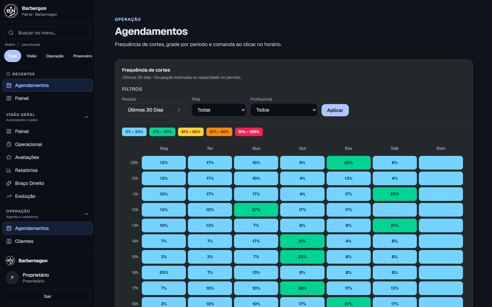
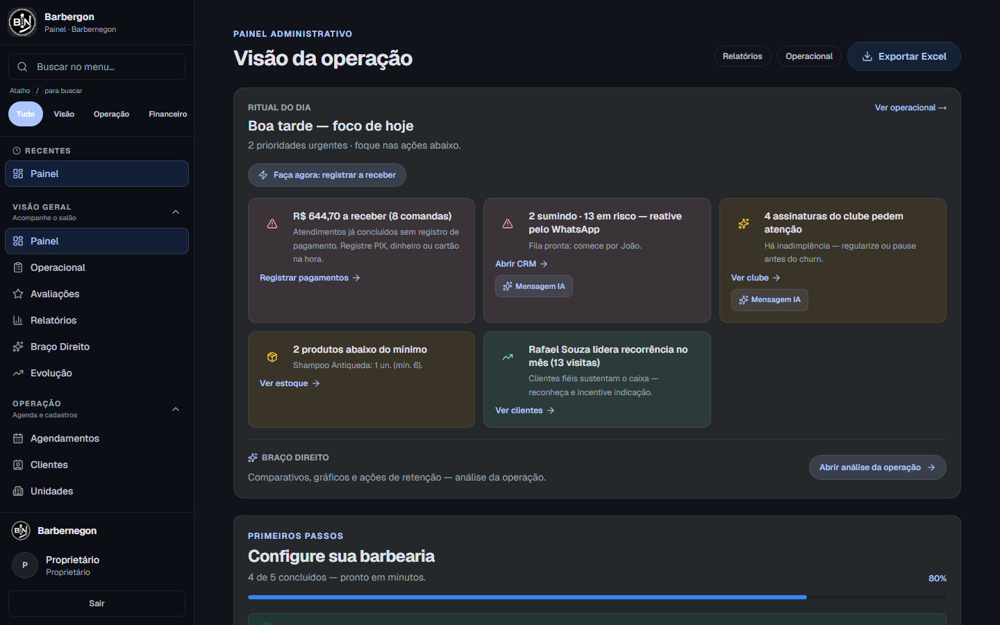
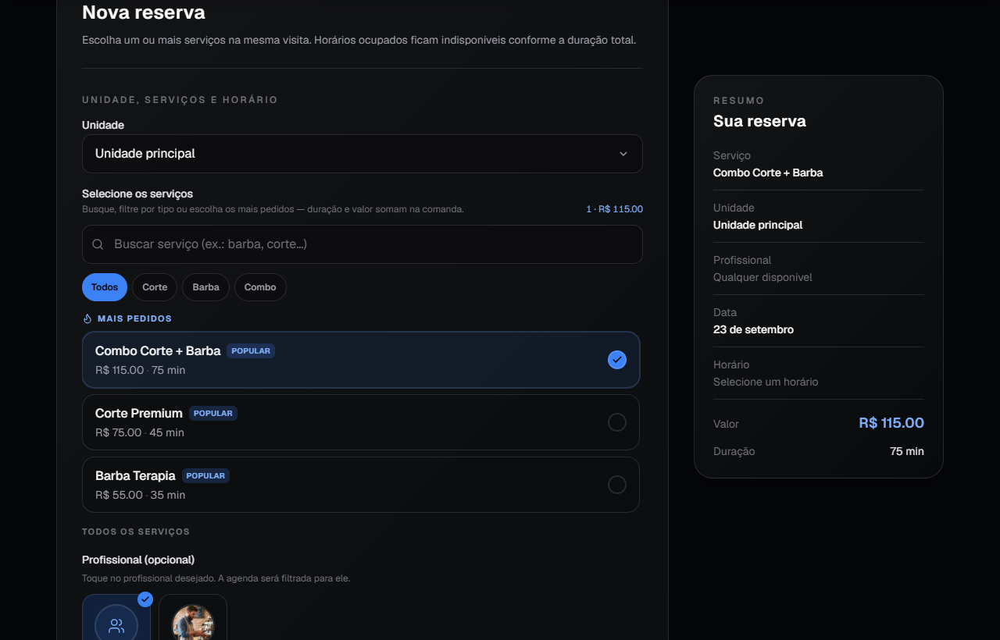
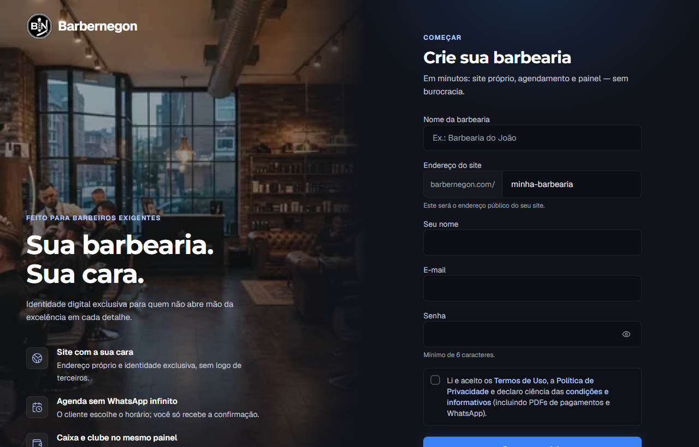
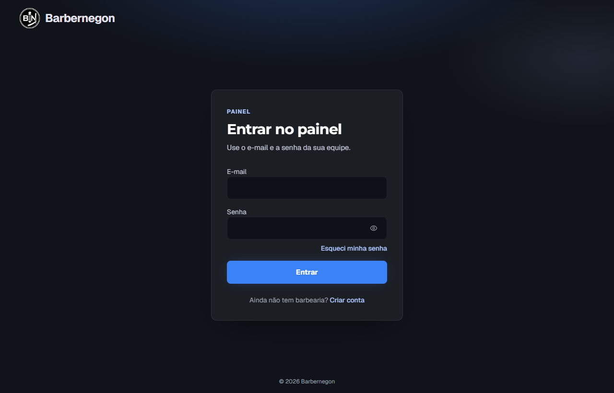

Barbernegon
A casa parece cheia no WhatsApp e a semana ainda fecha fraca. Aqui está o motivo — e o caminho mais curto para parar de perder dinheiro em horário vazio.
Sua barbearia. Sua cara. Sem burocracia.
01 — Comece por aqui
Você sente a casa “andando” — mensagem o dia todo no WhatsApp — mas o caixa da semana não fecha do jeito que o movimento sugere. Esse buraco tem nome: vaga perdida. Horário que podia ter virado dinheiro e evaporou sem ninguém contar.
Este guia é curto de propósito. Primeiro você mede o problema em poucos minutos. Depois aplica 4 correções simples. No final, mostro como isso passa a acontecer sozinho.
Não precisa contar a semana inteira agora — só olhar o dia de hoje.
Esse número já dói?
Multiplique por 6 dias de semana. É isso que este guia existe para reverter. Na seção 03 você refaz esse cálculo com mais precisão, usando uma semana fechada.
02 — O problema de verdade
Mensagem o dia inteiro parece demanda. Na prática, muita coisa ali é gente perguntando “tem horário?”, remarcando em cima da hora, ou só olhando preço. Enquanto você digita resposta, a cadeira do lado esfria — e o chat não te mostra isso.
Vaga perdida = horário que podia virar atendimento pago e não virou. Não é só falta — é cancelamento sem reposição, é horário “guardado” ontem que hoje ficou vazio, é vaga que nunca foi oferecida com clareza porque a resposta demorou.
03 — Meça direito
Opcional, mas mais preciso. Pegue uma semana que já passou. Conte só o que de fato aconteceu — sem achismo.
| Campo | O que contar | Sua semana |
|---|---|---|
| Horários abertos | Slots vendáveis do expediente (tire almoço, folga, bloqueio) | ______ |
| Horários atendidos | Só quem sentou e concluiu de verdade | ______ |
| Ticket âncora | Preço do serviço que mais vende (não a média sonhada) | R$ ______ |
Esse cálculo, o Barbernegon faz sozinho — todo dia, sem você preencher tabela nenhuma. Se quiser ver isso rodando com os números da sua própria barbearia, o cadastro é gratuito e leva menos tempo do que você levou pra preencher essa tabela.
Sem compromisso — o restante do guia continua valendo mesmo se você seguir só no papel por enquanto.
04 — Por que a vaga some
No chat, o “ok, marcado” vira reserva firme pra você e “vou tentar ir” pra ele. Sem prazo claro, a falta é previsível — não é má vontade do cliente, é o combinado que ficou frouxo.
O termo técnico é “assimetria de compromisso”.
Cancelou de manhã sem ninguém de prontidão pra entrar? Depois de umas 2 horas, a chance de preencher despenca. O problema não é o cancelamento em si — é a demora pra avisar quem topa entrar na hora.
A “janela de reposição” é a primeira hora depois do cancelamento.
Enquanto você responde um por um no WhatsApp, quem perguntou já marcou no salão ao lado. A demanda não sumiu — foi pra quem respondeu mais rápido e mais claro.
Inventário invisível.
Marketplace traz visita, não hábito. O cliente compara seu preço com o da barbearia ao lado, na mesma tela. E o histórico de quem marcou fica com o app — não com você.
Demanda alugada.
Uma reserva que vive só numa mensagem de WhatsApp é fácil de esquecer ou remarcar sem culpa. Uma reserva que vive numa página com a cara da sua marca pesa mais na cabeça do cliente.
Âncora de compromisso fraca.
05 — Correção prática
Publique o expediente real, não o ideal no papel. Separe serviço longo de curto pra não sobrar buraco impossível de encaixar. Deixe 1–2 janelas por dia livres só pra encaixe.
Toda marcação precisa de um prazo pra confirmar e um lembrete na véspera. Sem resposta até o prazo, a vaga libera pra fila.
10 a 20 nomes de clientes flexíveis, separados por manhã/tarde. Cancelou? Dispara em ordem, um a um.
WhatsApp continua sendo o canal de relacionamento. A marcação em si funciona melhor fora do chat, num link único que mostra o horário certo, sem ida e volta.
Confirmação com prazo
Lembrete na véspera
Encaixe rápido
2 faltas seguidas sem avisar → próximo horário só em horário menos concorrido, ou com sinal. Avise a regra já na primeira marcação.
06 — Aplicação
| Dia 1 | Calcule sua vaga perdida da semana passada (seção 03) e o R$ que ficou na mesa |
| Dia 2 | Ajuste o expediente publicado pro que você realmente cumpre |
| Dia 3 | Salve os 3 scripts prontos no seu celular |
| Dia 4 | Monte sua lista de 10 clientes flexíveis pra encaixe |
| Dia 5 | Avise sua política de falta pros próximos agendamentos |
| Dia 6 | Tire a marcação do meio da conversa solta — use um link único |
| Dia 7 | Meça de novo e compare com o Dia 1 |
07 — A virada
Confirmar, remarcar, disparar lista, lembrar prazo, saber quem tá livre — isso é gestão. E quem está com a máquina na mão vive outra fila: atraso, cliente sem hora marcada, barbeiro faltando.
Padrão comum: o método dura 3 ou 4 dias. Depois volta o improviso — e a vaga perdida volta também, só que sem alarme nenhum tocando.
08 — Onde cada correção mora no sistema
Você acabou de aplicar cada correção na mão. Veja onde ela vive sozinha dentro do painel do Barbernegon.
Grade de ocupação — resolve o motivo 3: você vê onde a ocupação cai, sem contar nada na mão.

08 — Continuação
Painel administrativo — resolve o motivo 2: mostra o que precisa de ação agora, não um feed de WhatsApp pra garimpar.

08 — Continuação
Fluxo de agendar — resolve o motivo 1: a reserva vira uma tela com resumo, não um “ok” solto no meio da conversa.

08 — Continuação
Site com a marca da barbearia — resolve os motivos 4 e 5: link próprio, sem concorrente do lado, sem depender de app de terceiro.
09 — Caminho de acesso
Sem mistério: você cria a barbearia, configura serviços e expediente, e já sai com site e agenda no ar.
Cadastro — cria sua barbearia e já define o endereço do seu site próprio.

09 — Continuação
Login do painel — depois do cadastro, é por aqui que você volta todo dia.

10 — Próximo passo
Você já sabe onde a vaga some e já tem os scripts pra corrigir na mão. Agora é decidir se quer continuar repetindo isso todo dia — ou deixar o sistema fazer por você.
Cadastro leva poucos minutos. Sem cartão. Os números que você calculou neste guia podem ser conferidos direto no seu painel assim que você entrar.
Sua barbearia, sua cara, sem burocracia.
© Barbernegon — material educativo. Adapte as regras à sua operação.